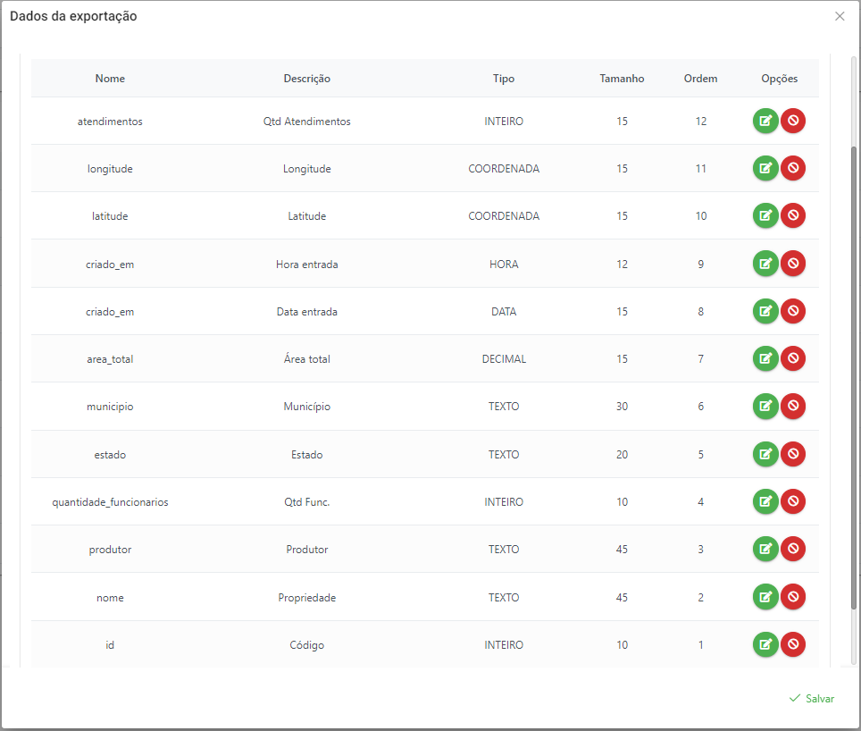

|
<< Click to Display Table of Contents >> Navegação: »Nenhum tópico acima deste nível« Cadastrando a exportação no sistema |
Acessar o menu de Configurações >> Exportações:
Clique no botão novo:
Será aberto a tela para o cadastro do nosso SQL previamente elaborado:
Nessa primeira tela temos os seguinte campos:
Nome |
É o nome que vai aparecer dentro do sistema para selecionar. |
Título do Relatório |
É o título que será exibido no excel |
SQL do Relatório |
É a consulta em SQL que o sistema deverá executar. |
Ordem |
Trata-se da ordem dos relatórios que é mostrado em tela. |
Ativo |
Para indicar se o relatório está em atividade |
Exibir para todas certificadoras |
Indica se todas as certificadoras podem ter acesso ao relatório. |
Preencher da seguinte forma:
Clicar na aba Parâmetros:
Essa tela é para selecionarmos quais serão os campos que o usuário realmente vai informar ao sistema para que seja passado ao SQL. Clique em Novo:
O campo nome, teremos de selecionar um entre os tipos de parâmetros já pré-definidos que são:
atendimento id |
Dropdown com Atendimentos |
atendimentoStatusId |
Dropdown com Status de atendimento |
atendimentoTipoId |
Dropdown com Tipos de Atendimento |
certificadoraId |
Campo oculto que indica a certificadora logada |
dataFim |
Campo do tipo data para data final |
dataInicio |
Campo do tipo data para data inicial |
diagnosticoId |
Dropdown para Diagnósticos |
diagnosticosIds |
Multiselect para Diagnósticos |
estadoId |
Dropdown para Estado |
eventoStatusId |
Dropdown para Status de Evento |
filialId |
Dropdown para Filiais |
municipioId |
Dropdown para municipios |
perfisIds |
Multiselect para Perfis |
pergundaId |
Dropdown para Perguntas |
produtorId |
Dropdown para Produtor |
protocoloId |
Dropdown para Protocolos |
questionarioId |
Dropdown para Questionário |
safraId |
Dropdown para Safra |
subtemaId |
Dropdown para Subtema |
tecnicoId |
Dropdown para Técnico |
temaId |
Dropdown para Tema |
usuario |
Campo oculto que traz o nome do usuário logado |
usuarioId |
Campo oculto que traz o código do usuário logado |
O campo relacionado, indica se após a sua seleção do item num dropdown, se deve por exemplo atualizar outro dropdown, como é o caso entre Estado e Cidade, ou seja, toda vez que selecionarmos um estado queremos que a lista de município seja daquele estado selecionado.
O campo Requerido, indica se esse parâmetro deve ser obrigatório para o usuário ou não.
O campo Ordem, indica a ordem de como serão apresentados em tela.
Assim para o nosso exemplo, teremos os seguinte parâmetros:
Por fim, vamos identificar quais campos são exportados dentro da planilha em excel. Clique em Campos e em Novo:
O campo nome, faz referência ao nome do campo dado dentro do SQL.
O campo descrição, será o nome que será dados ao título da coluna no excel.
O campo tipo do campo, indicará qual é ao sistema que tipo de formatação utilizar:
Coordenada |
Será formatado com 5 decimais |
Data |
DD/MM/AAAA |
Decimal |
Será formatado com 2 decimais |
Hora |
HH:MM |
Inteiro |
Será formatado sem decimais (caso exista será arrendado) |
Moeda |
Será formatado com 2 decimais e incluído o R$ |
Porcentagem |
Será formatado com 2 decimais e incluído o percentual |
Texto |
Não será formatado. |
Para o nosso exemplo, ficaria algo parecido com isso:
